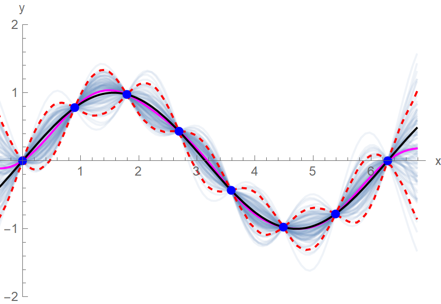
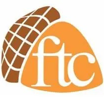
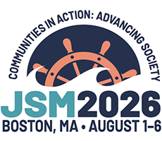
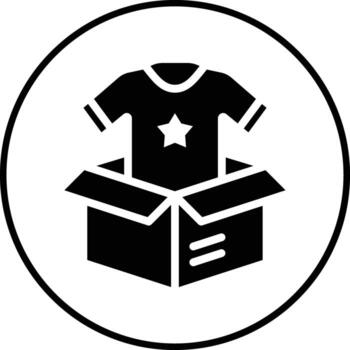
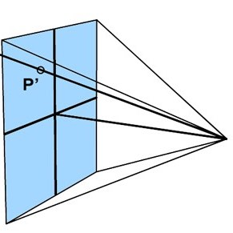

Active Research Area(s): Experimental Designs for Computer Experiments
Other Research Interests: Experimental Design, Spatial Statistics, Time Series, Sports Statistics, Machine Learning, AI, Bayesian Statistics
| Dissertation Advisor
Dr. Jonathan Stallrich Website |
Dissertation Committee Members: Dr. Sujit Ghosh (Website) Dr. Erin Schliep (Website) |
 |
Revisiting Sample Sizes for Sequential Computer Experiments |
| Difference Distributed Designs for Computer Experiments | |
| Fine-Tuning AI/ML Weather Models for Extreme Weather Forecasting |
| Saba Nafees, Venkata Naga Pranathi Vemuri, Miles Woollacott, Ahmet Can Solak, Phoenix Logan, Aaron McGeever, Olivia Yoo, and Sean H. Rice. “Ortho_seqs: A Python Tool for Sequence Analysis and Higher Order Sequence–Phenotype Mapping.” bioRxiv, January 1, 2022, 2022.09.14.506443. https://doi.org/10.1101/2022.09.14.506443. |
 |
Fall Technical Conference (Charlotte, NC)
|
 |
Joint Statistical Meetings (Boston, MA)
|
Quality and Productivity Research Conference (Santa Fe, NM)
|
 |
Merchandising Discounting Strategies and Impact on Revenue | Spring 2026 Completed as part of a Statistical Consulting course, in collaboration with the Carolina Hurricanes National Hockey League team. Engineered pricing elasticity models on 100,000+ transaction records using elastic net regression with autoregressive terms, isolating key promotional levers to optimize discounting strategy and revenue lift. |
| March Madness Predictor | Spring 2026 Completed as an independent predictive analytics project for the 2026 NCAA Men’s Basketball Tournament. Scraped game-level ESPN data to engineer leave-one-out season metrics in Python, then fit a cross-validated elastic net logistic regression model with team random effects in R to rank competing teams. Correctly predicted 2 of the Final Four participants and accurately forecast several major first-round upsets. |
|
| A Primer on Projection Properties of Designs in Computer Experiments | Fall 2025 Completed for PhD requirements at North Carolina State University. Synthesized literature on projection-based computer experimental designs and executed a large-scale simulation study on NCSU High-Performance Computing (HPC) clusters. Evaluated variable selection using spike-and-slab priors on anisotropic lengthscale hyperparameters, demonstrating that standard designs match specialized projection designs and revealing critical tradeoffs between projection properties and classification stability. |
|
 |
Random Projection-Based Testing in High Dimensions | Fall 2024 Completed in a two-person collaboration for an Advanced Statistical Inference course. Evaluated the extension of a novel high-dimensional random projection test statistic (Liu & Huang, 2024) to Poisson distribution settings, running simulations across varying signal strengths and sparsity regimes. Confirmed that the novel test statistic maintains robust power and Type I error control under Poisson specifications, matching original benchmark literature. |